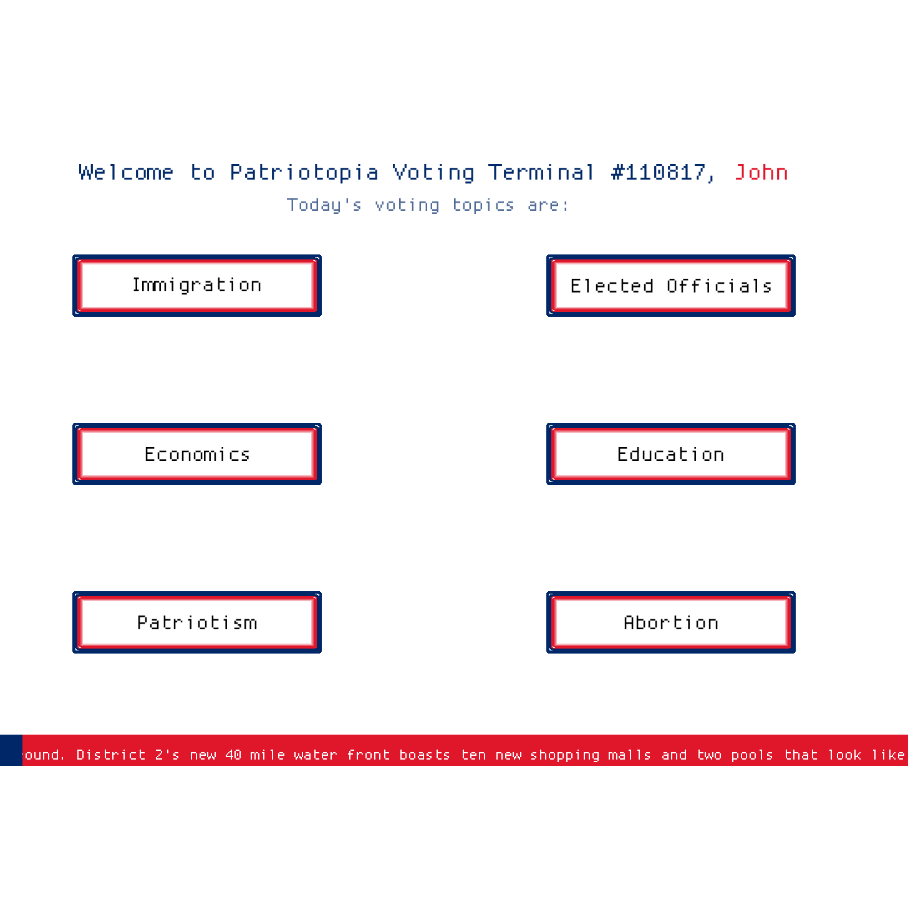
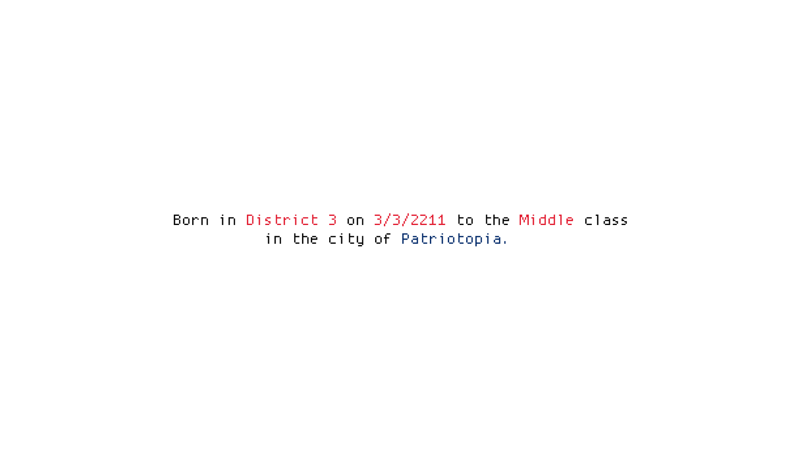

A Vote For the Future
2017/Art Amongst the many issues highlighted by the 2016 U.S. presidential election, socio-economic class-based voter suppression was a standout issue for me. A Vote For The Future is a interactive experience that puts you in the shoes of a random citizen in the dystopian city of Patriotopia. Voting is all electronic in this city, with designated voting terminals within the cities various districts. You get different traits every playthrough, with your socio-economic class being the deciding factor of how pleasant the whole experience is.
This is an example of what the intro sequence of images looks like, randomized elements are colored in red, story elements are colored in blue.